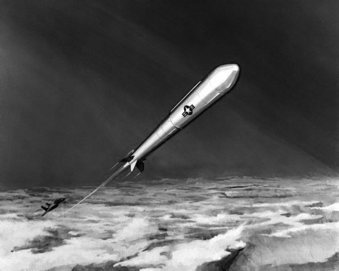
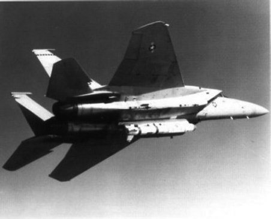

Истребитель спутников
В те годы, когда весь мир активно готовился к войне (я имею в виду 1960–1980 годы), одной из основных задач для американских и советских военных являлась борьба со спутниками противника. В первые минуты мирового конфликта предполагалось уничтожить все разведывательные, телекоммуникационные, навигационные аппараты противной стороны, дабы создать себе преимущество. Таковы были мысли армейских стратегов. О том, что и наши военные мыслили схожими категориями, я писать не буду. И так понятно.
Работы по противоракетным и противоспутниковым системам велись практически с первого дня космической эры. Их было множество, но расскажу я лишь об одной, которая была поставлена на вооружение в американской армии. Речь в этой главе пойдет о системе ASAT (сокращение от Anti-Satellite Missile – противоспутниковая ракета), к разработке которой американцы приступили в 1978 году после подписания президентом США Джимми Картером соответствующей директивы.
Побудительным мотивом к разработке стали успехи, которые были достигнуты в СССР, уже имевшем к тому времени достаточно эффективную систему уничтожения спутников противника. Для тех, кто не в курсе, сообщу, что первые пуски советских антиспутников состоялись еще в 1963 году, а в начале 1970-х годов система ИС (истребитель спутников) была принята на вооружение. Американцы начали позже и попытались сделать эту систему несколько иначе, чем в СССР.
В частности, в отличие от советских разработок, было решено уничтожать спутники не с помощью других космических аппаратов, а с помощью ракет, запускаемых с борта истребителя. С точки зрения тактики боевых действий, это было более удачное решение, чем принятое советскими конструкторами.

Ракета ASAT
Во-первых, существенно расширялся диапазон применения системы. Пуски могли производиться практически из любой точки земного шара. Причем поражение объекта происходило почти на час быстрее, чем это могли сделать советские системы.
Во-вторых, атаку системы ASAT было гораздо труднее предотвратить, нежели атаку ИСа. Хотя бы потому, что запуск американской ракеты труднее было зафиксировать, нежели старт тяжелой ракеты с Байконура.
Ракета ASM-135A для системы ASAT представляла собой двухступенчатую ракету длиной 5,42 метра и диаметром 51 сантиметр. Ее масса составляла 1180 килограммов. В качестве первой ступени использовалась твердотопливная ракета SR75-LP-1 из системы воздушного базирования AGM-69 SRAM, а в качестве второй – ступень «Альтаир-3» от ракеты-носителя «Скаут-В». Обе ступени имели штатные двигатели, но головная часть ракеты, то есть сам перехватчик, была снабжена несколькими десятками микродвигателей, способных проводить микрокоррекции траектории и обеспечивать точный выход на цель.
После запуска ракета должна была развивать скорость более 24 тысяч километров в час. Будь скорость меньше, вряд ли удалось бы обеспечить «свидание» с целью, движущейся со скоростью на 4 тысячи километров в час большей. Ракета имела возможность уничтожать вражеские спутники на высоте до 560 километров. В отличие от советских антиспутников, которые были снабжены осколочно-фугасными зарядами, чтобы выполнить задачу, ASM-135A необходимо было обеспечить прямое попадание в цель.
В качестве носителя планировалось использовать истребитель ВВС США F-15, модернизированный под систему ASAT. В документах Пентагона он получил обозначение F-15A.
Система ASAT была создана достаточно быстро, так как использовала уже имеющиеся наработки ВВС. Первый испытательный полет истребителя F-15A с закрепленной под фюзеляжем ракетой состоялся 21 декабря 1982 года. Однако потребовалось еще несколько лет, прежде чем начались летные испытания системы.
Первый испытательный пуск ракеты ASM-135A состоялся 21 января 1984 года. Его целью было не поражение реальной цели, а лишь проверка работы систем наведения и самой ракеты. Планировалось, что ракета должна достигнуть в космосе определенной точки, в которой в тот момент не будет никаких объектов. Пуск прошел успешно и вселил в души разработчиков оптимизм.
И он же стал причиной того, что после первого успеха конструкторы системы столкнулись с серьезными проблемами. В первую очередь это касалось функционирования системы наведения, но и сама ракета также могла «выкинуть фортель». Что и произошло на испытаниях, проведенных 13 ноября того же года. Достигнутый в январе успех не удалось ни развить, ни закрепить.
На доработку ракеты потребовался почти год, в течение которого у американцев росла уверенность в том, что следующий пуск будет удачным. Именно поэтому для нового испытания было запланировано поражение реальной цели, то есть старого, отработавшего свое, космического аппарата. Разрешение на проведение испытания системы ASAT по космическому объекту президент США Рональд Рейган дал 20 августа 1985 года. В качестве цели был выбран спутник Р78-1 «Солуинд», запущенный в космос в феврале 1979 года. Его полет проходил по орбите высотой 563–602 километра с наклоном 97,6 градуса.

Истребитель F-16 с ракетой ASAT на подвеске
Первоначально испытание было намечено на 4 сентября, но в срок провести его не удалось – запоздали с уведомлением Конгресса. Пришлось отложить пуск на 9 дней.
Испытание прошло успешно. В назначенное время истребитель F-15A взлетел с базы ВВС США Ванденберг, вышел в зону испытаний и начал стремительно набирать высоту, практически устремившись в зенит. На высоте более 20 километров на сверхзвуковой скорости произошел пуск ракеты. Теперь она устремилась навстречу спутнику. Перехват состоялся на высоте 555 километров над поверхностью Земли. Соударение было столь мощным, что Р78-1 разрушился на мелкие части. Впоследствии службы наблюдения за космическим пространством зафиксировали появление нескольких сотен фрагментов. Многие из них летают до сих пор.
Система ASAT испытывалась еще дважды, но уже не по реальным целям, а по «пустому месту». То есть выбиралось некое место в космическом пространстве, в которое необходимо было доставить противоракету. Такие испытания состоялись 22 августа и 29 сентября 1986 года и были успешными.
В планах Пентагона был заказ 112 ракет ASM-135A, которыми предполагалось оснастить 20 модернизированных истребителей F-15. Однако в 1988 году программа была свернута. Частично это произошло после заключения соглашения с СССР, а частично из-за того, что начались глобальные изменения на мировой арене. Советский Союз стремительно слабел, и в США решили просто сэкономить средства на весьма сомнительных системах вооружения.
Шли годы, и в США вновь вернулись к разговорам о создании противоспутниковых ракет. Используя уже имевшийся опыт, такая система была в начале XXI века создана, развернута и даже один раз использована. К счастью, целью стал не «спутник противника», а американский же разведывательный спутник USA-193, который был выведен на нерасчетную орбиту. Чтобы не допустить его падения со всеми секретами на территорию другого государства, его уничтожили 21 февраля 2008 года.